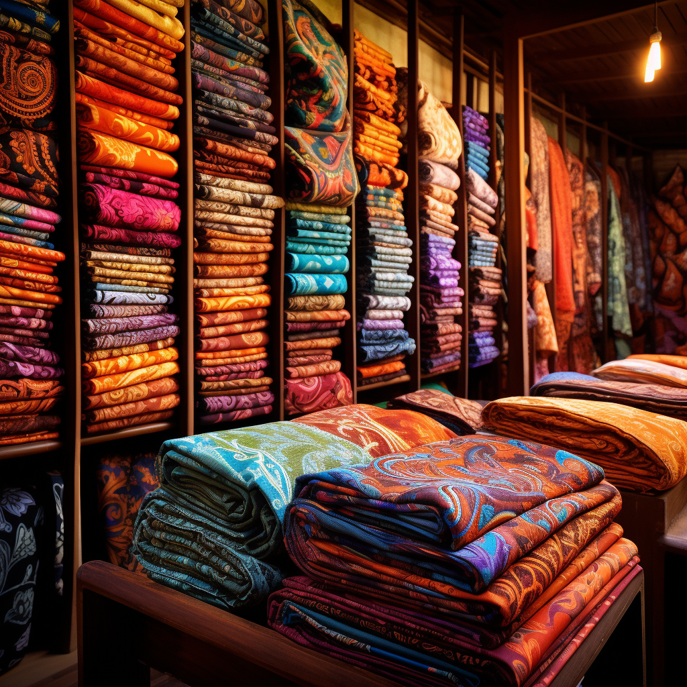

Batik Serenity
Step into a world of artistic brilliance as you behold this mesmerizing display of Indonesian batik textiles. The intricate patterns and vibrant colors tell stories of Indonesia's rich cultural heritage. Each motif is a testament to the creativity and skill of the artisans who have perfected this traditional craft over generations. Batik is more than just a fabric; it represents a profound connection to the country's history, myths, and traditions, making it a timeless symbol of artistic expression.